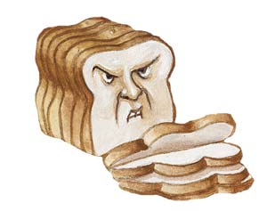

If you had asked your mother or grandmother for diet tips, you might have heard, “Every woman knows that carbohydrates are fattening.” In fact, that’s from a 1963 article in the British Journal of Nutrition, co-authored by one of the leading nutritionists of the era. And for the previous 100 years or so, this was the conventional wisdom: carbohydrate-rich foods such as bread, potatoes, pasta, rice, sweets and beer make us fat, and, by implication, foods rich in fat and protein do not.
But since then, the nutritional dogma has changed completely, and we’ve come to accept the idea that there is nothing uniquely fattening about carbohydrates. Rather, a calorie is a calorie is a calorie, as nutritionists hasten to tell us. This means that the only way to lose weight is to diligently eat less of everything, to exercise more and hope for the best - a prescription that even the experts will admit rarely seems to work.
As an investigative journalist working in science and health, I’ve spent the last decade assessing the conventional wisdom on diet, weight control and disease. My conclusion is that much of what we’ve been taught since the early 1970s - most of which we’ve all come to accept - is simply wrong. This might explain why those same years have seen unprecedented increases in obesity and diabetes worldwide. When I started my research, I had no idea that I would come to such contrarian views. But now I think that certain conclusions are virtually inescapable:
These conclusions about diet and weight loss aren’t exactly new. A carbohydrate-restricted diet is not a “fad diet” as the American Heart Association has insisted on calling it. Rather it had been the standard medical practice for treating obesity until the 1960s, when the American Heart Association began insisting that we all eat low-fat, carbohydrate-rich diets to prevent heart disease. But then, in one decade, the fattening carbohydrate was miraculously transformed - without benefit of scientific data - into heart-healthy diet food.
Beginning in the late 1950s, a small but influential group of nutritionists and cardiologists decided that dietary fat caused heart disease. First the American Heart Association adopted this position, then Congress, the U.S Department of Agriculture (USDA) and the National Institutes of Health. Beginning in the late 1980s with the publication of the Surgeon General’s Report on Nutrition and Health, an entire research industry arose to create palatable non-fat substitutes for fat, while the food industry spent billions to market the less-fat-is-good message. The USDA’s booklet on dietary guidelines and its Food Guide Pyramid recommended that fats and oils be eaten “sparingly,” while we were now to eat six to 11 servings per day of the pasta, potatoes, rice and bread once considered uniquely fattening.
Three facts were neglected during this national push for a low-fat diet. One was the upturn in obesity and diabetes rates that emerged as this new nutritional advice displaced the knowledge that carbs were fattening.
The second was that when researchers actually did clinical trials to test the hypothesis that eating less fat or less saturated fat prevented heart disease, the evidence failed to support the hypothesis. This was the conclusion of a 2001 review of “reduced or modified dietary fat for preventing cardiovascular disease.” The review was published by the Cochrane Collaboration, an international organization dedicated to producing unbiased assessments of the science underlying medical interventions. The authors had combed the literature for all possible studies that addressed the question of dietary fat and heart disease. They identified 27 that were performed with sufficient scientific rigor to be considered meaningful. These trials encompassed some 10,000 subjects, followed for an average of three years each. The review concluded that our supposedly heart-healthy diets, whether low in all fat or just saturated fat, had no effect on longevity and no significant effect on the likelihood of actually having a heart attack.
The third fact that was regrettably neglected during the years that we came to believe in the evils of saturated fat was that back in the 1950s and early 1960s, biochemists and physiologists had already figured out what it is that regulates the accumulation of fat in our fat tissue. In other words, scientists have known what makes us fat for almost half a century.
As it turns out, every hormone in our body works to release fat from our fat tissue, with the singular exception of insulin, which works to put it there. And insulin levels in our blood are determined primarily by the carbohydrate content of our diet. The more carbohydrates we consume, and the easier they are to digest, the higher our insulin. Insulin tells our fat tissue to accumulate fat. So long as insulin levels remain elevated, fat is locked in the fat tissue and can’t escape.
What’s even more remarkable - and completely ignored in all discussions of obesity and weight since the 1970s - is that we must eat carbohydrates to accumulate excess fat in our fat tissue. It’s only by eating carbohydrates that we can obtain alpha glycerol phosphate, an enzyme that is an absolute requirement for storing fat. This enzyme fixes the fat in the fat tissue in a way that it can’t slip back out through the fat cell membranes and escape into the blood stream. This is why the more carbohydrates we consume, the more fat we will store. The less carbohydrates, the less fat.
After a meal is digested, insulin levels should decline. When this happens, fat is released from the fat tissue in the form of fatty acids and these are then burned in cells for fuel. For this reason, another necessary requirement for remaining lean is to have lengthy periods during which insulin levels are low and we burn our fat for fuel. When insulin levels remain elevated, fat can’t escape from the fat tissue. It goes in, but it doesn’t come out, and we can’t use it for energy. A meal without carbohydrates is a meal that doesn’t stimulate any significant insulin secretion. You store very few, if any, calories as fat, and you get plenty of opportunity to burn the fat you had stored.
The reason this science was left behind was a simple one. Diet doctors in the 1960s read the same medical literature that I did decades later, and they then began prescribing carbohydrate-restricted, mostly meat diets to their patients. But a low-carbohydrate diet is high in fat, and fat was thought to be a killer. Indeed, in 1965, the same year that the American Physiology Society published an 800-page Handbook of Physiology describing the recent research in the regulation of fat tissue, the research that implicated carbohydrates and insulin in fat storage, the Harvard nutritionist Jean Mayer was quoted in The New York Times saying it would be the equivalent of “mass murder” to prescribe low-carbohydrate diets to treat obesity. Mayer’s reasoning was that these diets were high in fat and the fat would cause heart disease. That’s how the medical establishment has treated it ever since, even after researchers revealed that high fat diets actually improve cholesterol profiles, rather than worsen them.
Meanwhile, the last decade has witnessed a renewed interest in carbohydrate-restricted diets as obesity levels have risen and a new generation of clinicians have come to question the prevailing wisdom on weight loss. These studies have all confirmed what the underlying science of fat regulation tells us: cut out carbohydrates and you lose fat. Seven independent teams of investigators set out to test low-fat, low-calorie diets of the kind recommended by the American Heart Association in randomized control trials against “eat as much as you like” Atkins-like diets. Together these trials included well over 900 obese subjects. In each case, the weight loss after three to six months was two to three times greater on the low-carbohydrate diet - unrestricted in calories - than on the calorie-restricted, low-fat diet.
In 2003, the prestigious medical journal JAMA published an article that its seven authors from the Yale and Stanford medical schools considered to be the “first published synthesis of the evidence” in the English-language medical literature on the efficacy and safety of carbohydrate-restricted diets. They concluded that the evidence was “insufficient to recommend or condemn the use of these diets,” because it lacked long-term randomized trials that could allow the safety of the diets to be established beyond reasonable doubt. Nonetheless, they did report the average weight loss from 40 years of trials and research. “Of the 34 of 38 lower-carbohydrate diets for which weight change after diet was calculated, these lower-carbohydrate diets were found to produce greater weight loss than higher-carbohydrate diets” - an average of 37 pounds when carbohydrates were restricted to less than 60 grams (240 calories) a day, compared to 4 pounds when they were not.
The ultimate question is whether a protein- and fat-rich diet lacking virtually all starches and sugars can be a healthy diet, since one conclusion of my research is that to remain lean we would have to follow such a regimen for life. If we give up carbohydrates and lose our excess weight, but then go back to carbohydrates, the weight will come back as well.
Is it possible to eat red meat in any quantity without it being bad for our hearts? This is one question of many where the experts have simply failed us. If you actually look at the fat content of a piece of red meat (or eggs and bacon), you’ll find that the principal fat is not saturated fat - which is supposedly bad for the heart - but the same monounsaturated fat as in olive oil, which is supposedly good for the heart. And much of the remaining fat is still what nutritionists would consider heart-healthy. Consider a porterhouse steak, for example, with a quarter-inch layer of fat. After broiling, this reduces to almost equal parts fat and protein. Of the fat, slightly more than half (51 percent) is monounsaturated, which lowers the (bad) LDL cholesterol and raises the (good) HDL. Slightly less than half (45 percent) is saturated fat, some of which raises LDL, but all of it raises HDL. A third of that saturated fat is stearic acid, which raises (the good) HDL, and has no effect on the bad LDL. The remaining fat (4 percent) is polyunsaturated, which lowers LDL but has no meaningful effect on HDL. (You can look up the numbers yourself in the USDA National Nutrient Database.)
Although nutritionists don’t like to talk about this in an era that considers fruits and vegetables to be the sine qua non of a healthful diet, animal products happen to contain all the amino acids, minerals and vitamins essential for health, with the only point of controversy being vitamin C. And the evidence suggests that the vitamin C content of meat products is more than sufficient for health, so long as the diet is indeed carbohydrate-restricted, absent the refined and easily digestible carbohydrates and sugars that would raise blood sugar and insulin levels and so increase our need to obtain vitamin C from the diet.
Moreover, carbohydrate-restricted diets, as they have been prescribed since the 1920s, do not restrict green leafy vegetables, but only starchy vegetables such as potatoes and refined grains and sugars - only those foods that are virtually absent any essential nutrients unless they’re added back in the processing, as is the case with white bread. A calorie-restricted diet that cuts calories by a third, as the British nutritionist John Yudkin pointed out in the early 1970s, will also cut essential nutrients by a third. A diet that prohibits sugar, flour, potatoes and beer, but allows eating to satiety of meat, cheese, eggs and green vegetables, will leave the essential nutrients, whether or not it leads to a decrease in calories consumed.
If you’ve been trying and failing time and time again to lose weight by dutifully eating less and exercising more, perhaps its time to try your grandmother’s diet instead. Stay away from the fattening carbohydrates, stop worrying about how much fat you eat and see what happens. Let your weight and your waist circumference tell you whether the diet you’re now eating is a healthy one.
As far back as the 1820s, the French gastronome Jean Brillat Savarin in The Physiology of Taste, insisted that the roots of obesity were obvious. He had spent 30 years, he said, listening to one “stout party” after another proclaim their love for bread, rice and potatoes. His conclusion: obesity was caused by a natural predisposition to put on weight, conjoined with the “floury and feculent substances, which man makes the primary ingredient of his daily nourishment.” And the effects of this fecula - i.e., “potatoes, grain or any kind of flour” - he added, were exacerbated by eating sugar.
For the next 140 years, when physicians discussed weight loss in the medical literature, the two constants were the ideas that starches and sugars - i.e., carbohydrates - must be minimized to reduce weight, and that meat, fish or fowl must constitute the bulk of the diet. “The great progress in dietary control of obesity,” wrote Hilde Bruch, considered the foremost authority on childhood obesity, in 1957, “was the recognition that meat … was not fat producing; but that it was the innocent foodstuffs, such as bread and sweets, which lead to obesity.”
This was also what Dr. Spock taught our parents and our grandparents in five decades, eight editions and more than 50 million copies of Baby and Child Care, the bible of child-rearing in the latter half of the 20th century. “Rich desserts,” Spock wrote, and “the amount of plain, starchy foods (cereals, breads, potatoes) taken is what determines, in the case of most people, how much [weight] they gain or lose.”
|
KERI ROSEBRAUGH While sugar and soda might be obvious foods to avoid, others such as processed foods, refined carbohydrates and beer should be limited for weight control, as well. |
 KERI ROSEBRAUGH Carbohydrates, not fat, are the cause of excess weight, just as our grandparents’ generation always believed. |
KERI ROSEBRAUGH The more carbohydrates we consume, the more fat we will store |
|
KERI ROSEBRAUGH Sugary sodas are just one example of the sweets that trigger an insulin spike, and the command for your body to store fat. |
KERI ROSEBRAUGH It’s not only instant drink mixes that are high in sugar - the sweet stuff is often lurking in pre-made and frozen fruit juices, teas and sports drinks, as well. |
|